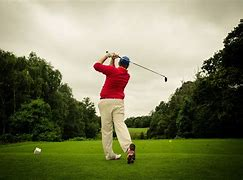

Masters de Augusta 2025 - Victoria de Scottie Scheffler
Fecha: 13 de abril de 2025
Resumen: El Masters de Augusta 2025 concluyó con el triunfo de Scottie Scheffler, quien firmó una ronda final espectacular para llevarse su segundo título en este prestigioso torneo. Su consistencia y temple fueron claves para imponerse ante figuras como Rory McIlroy y Jon Rahm.
Detalles del Torneo
El torneo se disputó del 10 al 13 de abril de 2025 en el Augusta National Golf Club. Scheffler lideró desde el tercer día y cerró con una ronda final de 68 golpes, asegurando su victoria con un total de -12 bajo par.
Rendimiento de los Competidores
Rory McIlroy estuvo cerca de lograr su primer Masters, pero un bogey en el hoyo 17 le costó caro. Jon Rahm mostró gran nivel durante los primeros días, pero no logró mantener el ritmo en el fin de semana. La solidez de Scheffler fue la diferencia clave.